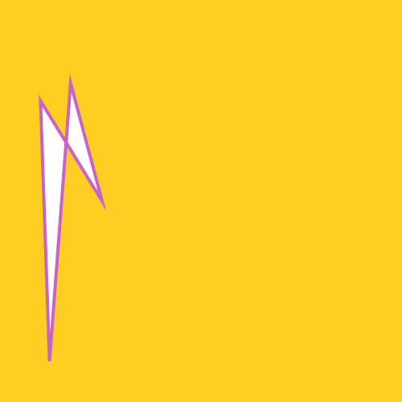

Procedural Art – Spring 2025


Malick Deighton
Randomization
JavaScript

Henry Holcomb
Swirly
JavaScript

Yoshi Peretti
whirlWeb
JavaScript

Owen Hawxhurst
Non Repeating pattern
JavaScript

Jack Tibbitt
8
JavaScript

Jackson Huggins
Jackson's Art
JavaScript

Kieran Fennell-Molinaro
The Star
JavaScript

Ellis Kopcho
vertical asymptote
JavaScript
Oliver Dauberman
Red Infinity
JavaScript

Aidan Byrne
hypnotizing
JavaScript

Benjamin Silva
Pacing
JavaScript
Lockett Pentz
Lissajous Lockett
JavaScript

Gibson Buffa
Agitation
JavaScript

Geo Mazzotta
The Grand Comic
JavaScript